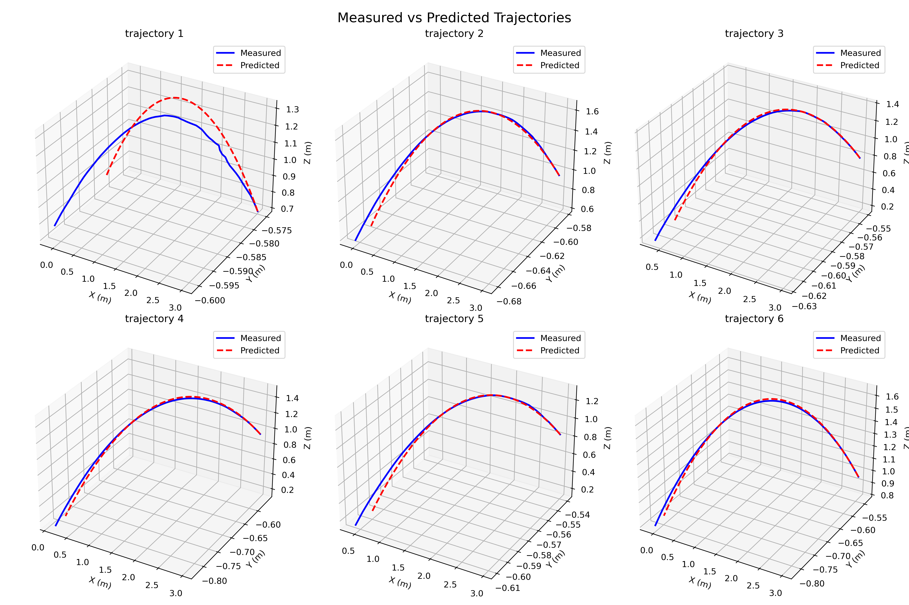
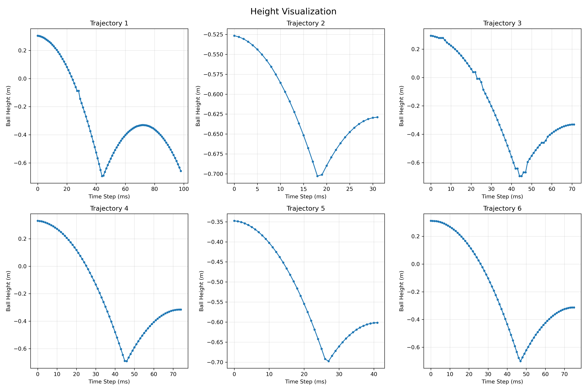

📹 Media & Demonstrations
Demonstration Videos
Main Demonstration
Catching Phase
Hovering Phase
Results & Visualizations

Accuracy Metrics

Trajectory Comparison

Height Visualization
Authors: Afshin & Co-Authors
Conference/Journal: Your Conference Name
A key challenge in deep reinforcement learning for multi-task settings is performing long-horizon tasks consecutively and reaching the final goal through a single trained model. The objective of this research is to define multiple consecutive tasks for non-prehensile manipulation and achieve the final goal, which is hovering a thrown ball at a specific position. Separate but similar rewards are designed for each task to facilitate a smooth transition from one task to the next. The agents are trained in parallel with dynamic entropy levels, and the tasks are defined as catching, stabilizing, hovering, carrying to a target point, and hovering again. The results indicated that the agents can perform multiple tasks through one network for all the tasks and complete them consecutively to reach the final target point.
Main Demonstration
Catching Phase
Hovering Phase
Accuracy Metrics
Trajectory Comparison
Height Visualization
| Task | Success Rate (%) | Avg Time (sec) | Notes |
|---|---|---|---|
| Catching | 95.2% | 0.5 | Real-time performance |
| Stabilizing | 92.8% | 1.2 | Oscillation dampening |
| Hovering | 98.1% | 0.8 | Stable position hold |
| Transport | 89.5% | 2.5 | To target location |
We employ deep reinforcement learning with the following components:

Lead Researcher

Contributor
Training typically takes 2-3 days on a high-end GPU for all tasks combined. Individual task training takes 4-6 hours each.
Yes, with modifications to the joint limits and kinematics. The code is modular and can be adapted to other 6+ DOF arms.
Approximately 92% success on novel trajectories after sim-to-real transfer learning.
@article{your2024catchthrow,
title={Catch-Throw: Learning to Catch a Thrown Object},
author={Your Name and Co-Authors},
journal={Your Journal},
year={2024}
}